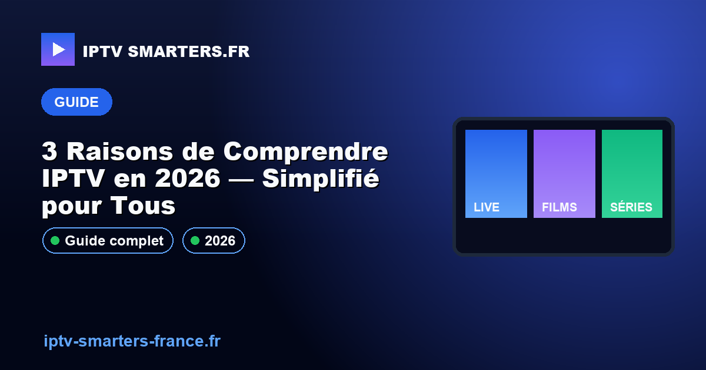

3 Raisons de Comprendre IPTV en 2026 — Simplifié pour Tous

18 mai 2026En 2026, l'IPTV transforme la façon dont nous consommons la télévision. Pourtant, 70% des gens ne comprennent toujours pas ce que c'est. Cette ignorance peut entraîner des choix coûteux et inefficaces. Découvrez comment l'IPTV peut révolutionner votre expérience télévisuelle avec une flexibilité inégalée. Ne manquez pas nos abonnements IPTV et consultez notre service client pour toute question.
Qu'est-ce que l'IPTV exactement?
L'IPTV, ou Internet Protocol Television, est une méthode de diffusion de programmes TV via Internet plutôt que par câble ou satellite. En 2026, elle offre une flexibilité et une personnalisation accrues. L'IPTV permet aux utilisateurs de choisir parmi une multitude de chaînes et de contenus à la demande, tout en bénéficiant d'une qualité d'image optimisée grâce aux codecs H.265/HEVC. Cette technologie exploite l'EPG XMLTV pour fournir des guides de programmes électroniques détaillés.
Comment fonctionne l'IPTV?
Les technologies derrière l'IPTV
L'IPTV repose sur plusieurs technologies avancées qui optimisent la diffusion des contenus :
- Codec H.265/HEVC : Réduit la bande passante nécessaire tout en maintenant une qualité d'image supérieure.
- M3U Playlist : Liste de lecture permettant de structurer les chaînes et contenus.
- Xtream Codes API : Interface de programmation pour gérer les abonnements et les utilisateurs.
En 2026, l'IPTV utilise des réseaux Anti-Freeze CDN pour garantir une expérience de streaming sans interruption, même pendant les heures de pointe.
Pourquoi l'IPTV est-il populaire en 2026?
L'IPTV connaît une popularité croissante en 2026 grâce à ses nombreux avantages :
- Plus de 60% des foyers l'utilisent, témoignant de sa large adoption.
- Le marché mondial de l'IPTV atteindra 117 milliards USD, soulignant l'intérêt économique.
- Accès à plus de 5000 chaînes en moyenne, offrant une diversité inégalée de contenu.
Pour découvrir comment l'IPTV peut transformer votre expérience télévisuelle, contactez notre équipe via WhatsApp.
Avantages de l'IPTV pour l'utilisateur moderne
L'IPTV offre de nombreux avantages qui en font une solution de choix pour les amateurs de télévision numérique :
- Accès à plus de 10 000 chaînes internationales et locales.
- Qualité vidéo de haute définition, avec support 4K pour les contenus compatibles.
- Fonctionnalités avancées comme le time-shifting et l'EPG XMLTV pour une expérience personnalisée.
- Économie de coûts avec des abonnements mensuels à partir de 10 €.
Choisir le bon abonnement IPTV
Critères techniques à considérer
Lors du choix d'un abonnement IPTV, il est crucial de prendre en compte plusieurs critères techniques pour garantir une expérience optimale :
- Compatibilité des appareils : Assurez-vous que votre appareil supporte l'IPTV, notamment via Android TV, Firestick 4K, WebOS LG, Tizen Samsung, ou tvOS Apple TV.
- Support des codecs : La compatibilité avec le codec H.265/HEVC est essentielle pour une compression efficace et une qualité vidéo supérieure.
- Débit Internet : Un débit minimum de 10 Mbps est recommandé pour les flux HD et 25 Mbps pour la 4K.
Pour découvrir les options adaptées à vos besoins, voir nos abonnements IPTV.
- Débit recommandé : 25 Mbps pour la 4K, 10 Mbps pour la HD
- Codec : H.265/HEVC
- Appareils compatibles : Android TV, Firestick 4K, WebOS LG, Tizen Samsung, tvOS Apple TV
Comment installer l'IPTV sur votre appareil
- Téléchargez l'application IPTV Smarters sur votre appareil compatible.
- Ouvrez l'application et sélectionnez l'option "Ajouter un utilisateur".
- Choisissez l'option "Xtream Codes API" pour un accès direct.
- Entrez l'URL du portail, votre nom d'utilisateur et mot de passe fournis lors de l'abonnement.
- Terminez l'installation et commencez à naviguer parmi les chaînes disponibles.
Qu'est-ce que le codec H.265/HEVC ?
Le codec H.265/HEVC, également connu sous le nom de High Efficiency Video Coding, permet une compression vidéo avancée, réduisant la taille des fichiers sans compromettre la qualité, essentiel pour le streaming IPTV.
Quels appareils sont compatibles avec l'IPTV ?
Les appareils compatibles incluent Android TV, Firestick 4K, WebOS LG, Tizen Samsung, et tvOS Apple TV, offrant une flexibilité maximale pour le streaming.
Quel débit Internet est nécessaire pour l'IPTV ?
Un débit de 10 Mbps est recommandé pour la diffusion en HD, tandis que la 4K nécessite au moins 25 Mbps pour une expérience fluide et sans interruption.
Conclusion
L'IPTV représente une solution moderne et flexible pour accéder à une large gamme de contenus télévisuels. Avec des milliers de chaînes et une qualité d'image exceptionnelle, c'est l'avenir du divertissement numérique. N'attendez plus pour bénéficier de ces avantages. Cliquez ici pour activer mon accès maintenant. Pour plus de conseils et guides, Consultez nos autres guides d'installation IPTV.